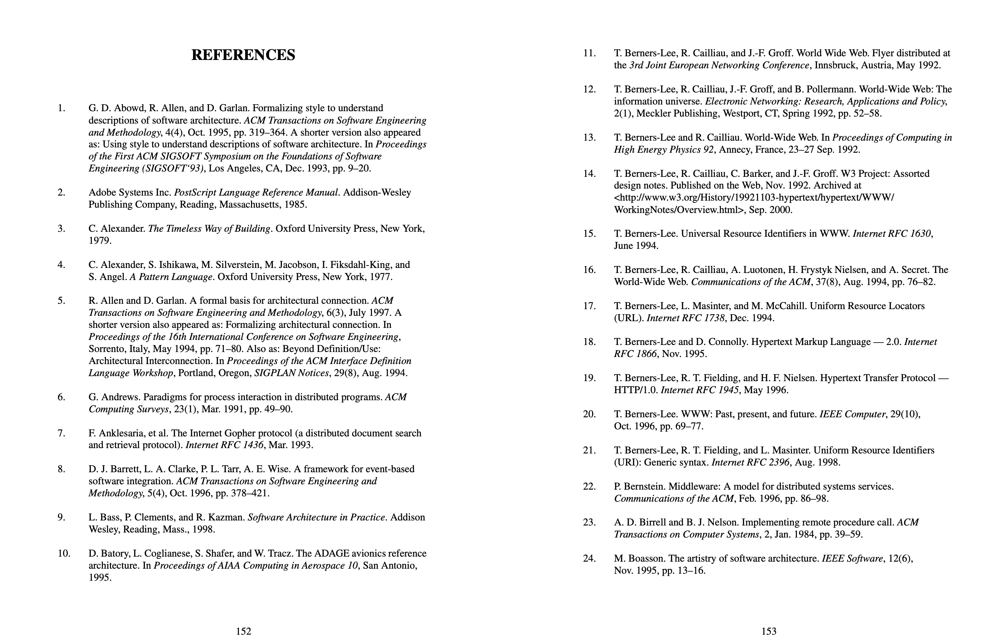
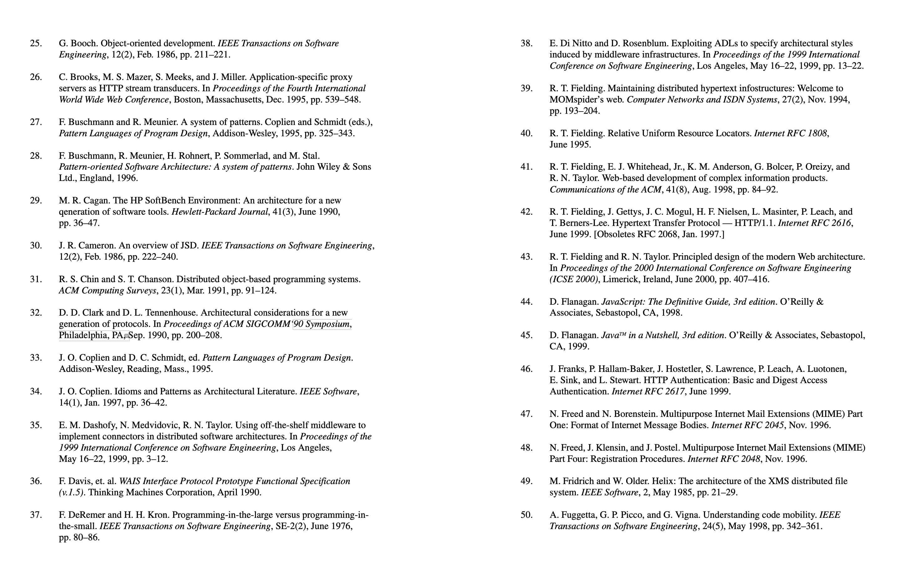
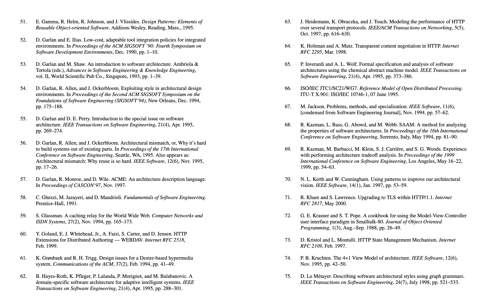
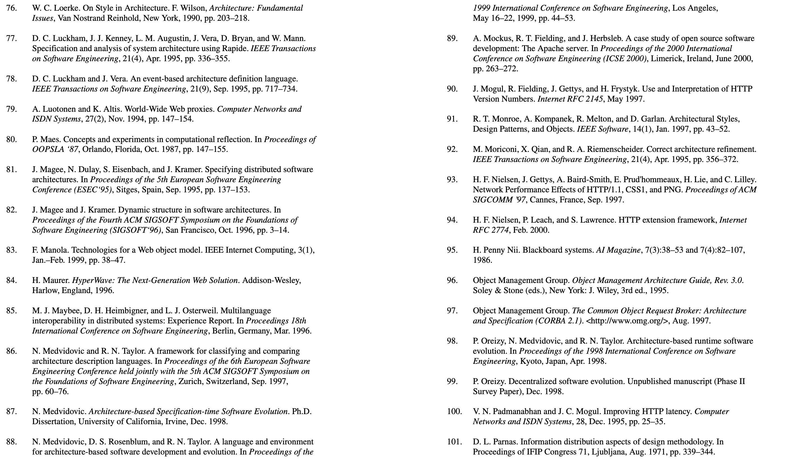
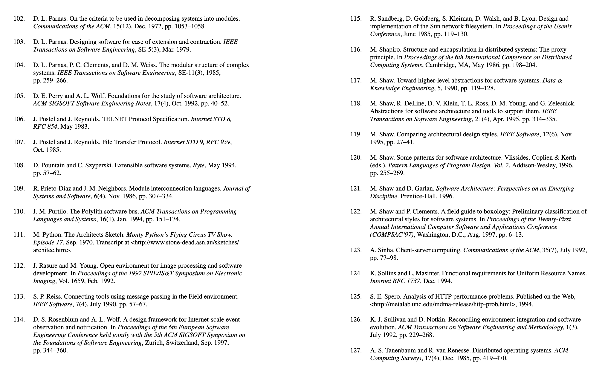
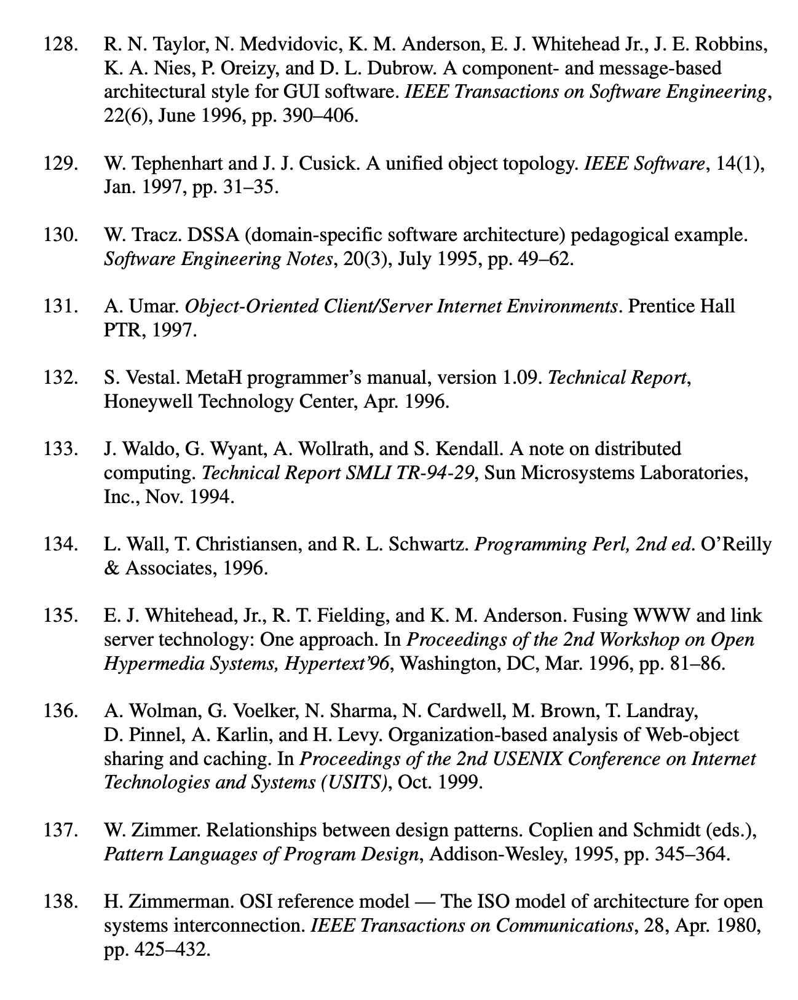

Architectural Styles and the Design of Network-based Software Architectures 참고자료
Web
2021-01-15 20:23:30






#참고자료 #REST #Architectural Styles and the Design of Network-based Software Architectures